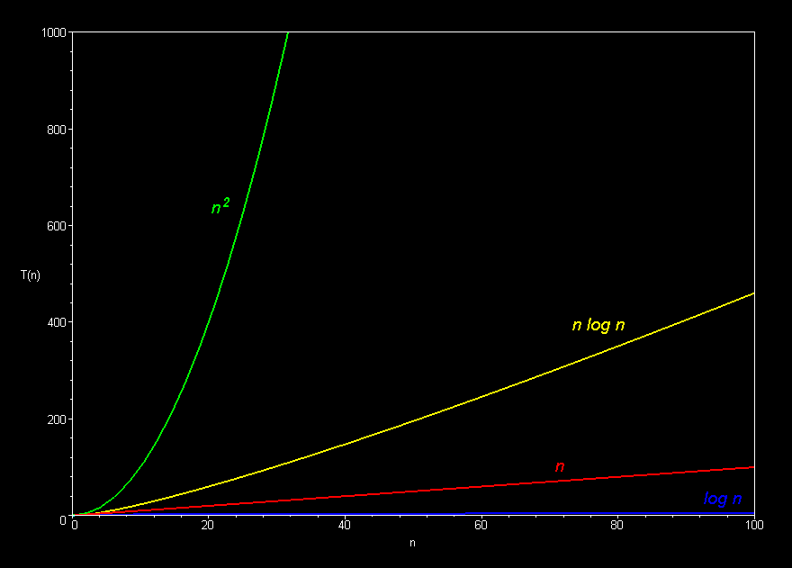
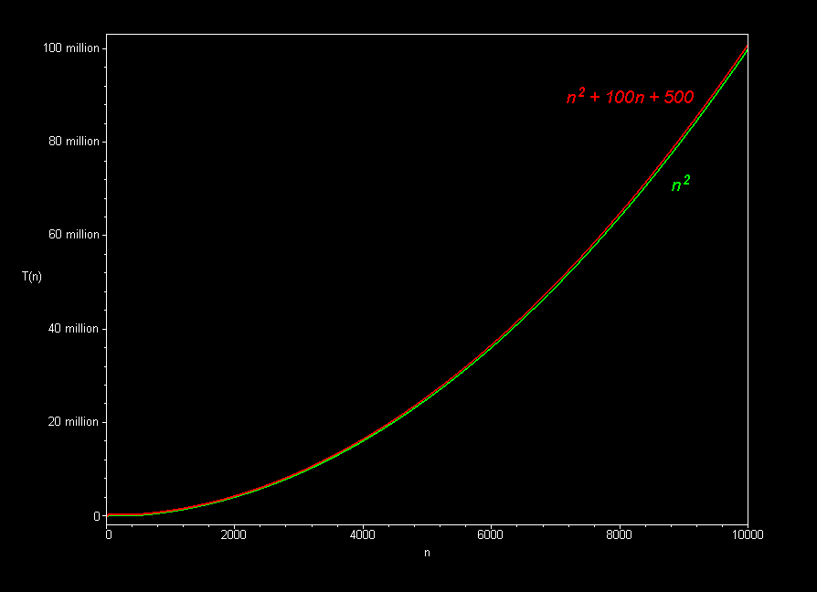

CMU 15-112: Fundamentals of Programming and Computer Science
Class Notes: Efficiency
- Big-Oh
- Common Function Families
- Efficiency
- The Big Idea
- Examples
- Linear Search vs Binary Search
- Sorting
- Sorting Examples
- SelectionSort vs MergeSort
- Big-Oh
- Describes asymptotic behavior of a function
- Informally (for 15112): ignore all lower-order terms and constants
- Formally (after 15112): see here
- A few examples:
- 3n2 - 2n + 25 is O(n2)
- 30000n2 + 2n - 25 is O(n2)
- 0.00000000001n2 + 123456789n is O(n2)
- 10nlog17n + 25n - 17 is O(nlogn)
- Common Function Families
- Constant O(1)
- Logarithmic O(logn)
- Square-Root O(n0.5)
- Linear O(n)
- Linearithmic, Loglinear, or quasilinear O(nlogn)
- Quadratic O(n2)
- Exponential O(kn)
- Efficiency
When we say the program runs in O(f(N)), we mean...- N is the size of our input
- For a string s, N = len(s)
- For a list L, N = len(L) (also true for sets, dictionaries, and other collections)
- For an integer n, N = numberOfDigits(n) = logb(n), so n = bN (where b is the base, and you can use any base b >= 2).
- In the literature, N is often written in lowercase n, but we use that often to represent an integer n, which is different from the size of that integer. So in 112, we use uppercase N for the size of the input.
- f(N) = resource consumption of our program
- Resource can be time, space, bandwidth, ...
- For 15112, we mainly care about time
- For time, we usually measure algorithmic steps rather than elapsed time (These share the same big-oh, but algorithmic steps are easier to precisely describe and reason over)
- Note that you can measure worst-case or average case, or even other
cases such as best case (which often is trivial to compute and not very useful in practice). For 15-112, we often omit this term (which is a notable simplification
that you will not see in future courses), and we nearly always mean worst-case,
which is quite useful and generally easier to compute than average-case.
- Count steps in a written algorithm, or comparisons and swaps in a list, etc
- Can verify by timing your code's execution with: time.time()
- N is the size of our input
- The Big Idea
- Each function family grows much faster than the one before it!
- And: on modern computers, any function family is usually efficient enough on small n, so we only care about large n
- So... Constants do not matter nearly as much as function families
- Practically...
- Do not prematurely or overly optimize your code
- Instead: think algorithmically!!!
- Examples
- Sequences, Nesting, and Composition
- Sequencing
# what is the total cost here? L = [ 52, 83, 78, 9, 12, 4 ] # assume L is an arbitrary list of length N L.sort() # This is O(NlogN) L.sort(reverse=True) # This is O(NlogN) L[0] -= 5 # This is O(1) print(L.count(L[0]) + sum(L)) # This is O(N) + O(N) - Nesting
# what is the total cost here? L = [ 52, 83, 78, 9, 12, 4 ] # assume L is an arbitrary list of length N for c in L: # This loop's body is executed O(N) times L[0] += c # This is O(1) L.sort() # This is O(NlogN) print(L) # This is O(N) (why?) - Composition
# what is the total cost here? def f(L): # assume L is an arbitrary list of length N L1 = sorted(L) # This is O(NlogN) return L1 # This is O(1) def g(L): # assume L is an arbitrary list of length N L1 = L * len(L) # This is O(N**2) (why?) return L1 # This is O(1) L = [ 52, 83, 78, 9, 12, 4 ] # assume L is an arbitrary list of length N L = f(g(L)) # What is the big-oh of this? print(L) # This is O(N**2) (why?)
- Sequencing
- Sequences, Nesting, and Composition
- Python Builtins
Here we use S for a set and L for a list:- Some are O(1), including len(L), (val in S), L.append(item)
- Some are O(N), including max(L), min(L), (val in L), L.count(val), set(L)
- Sorting is O(NlogN)
- For a more complete list, see here
- isPrime vs fasterIsPrime
- From these examples, we see that isPrime tests O(n) factors whereas fasterIsPrime tests O(n0.5) factors.
- But the size of the input is N=log2(n), so we substitute n=2N.
- And we conclude that our isPrime is O(2N) and fasterIsPrime is O((2N)0.5)) = O(2N/2).
- And so: isPrime(n) is exponential, and hopelessly slow on large inputs.
- And: fasterIsPrime, while much faster, is also exponential and so also hopelessly slow on large inputs.
- Much faster primality tests exist. For example, the AKS Primality Test is polynomial not exponential!
- Linear Search vs Binary Search
- Linear search
- Basic idea: check each element in turn
- Use: find an element in an unsorted list
- Cost: O(N)
- Binary search
- Basic idea: in a sorted list, check middle element, eliminate half on each pass
- Uses:
- Find an element in a sorted list
- Number-guessing game (eg: guess a random number between 1 and 1000)
- Find a root (zero) of a function with bisection (adapted binary search)
- Cost: O(logN)
- Linear search
- Sorting
- Sorting Examples
See here. - SelectionSort vs MergeSort
- Definitions
- selectionsort: repeatedly select largest remaining element and swap it into sorted position
- mergesort: sort blocks of 1's into 2's, 2's into 4's, etc, on each pass merging sorted blocks into sorted larger blocks
- Sorting Links
- Wikipedia page on Sorting
- David Eck's xSortLab applet (or you might try this jar file )
- Our sorting sample code (You need to be able to write all of this (except bubblesort) from scratch!)
- Excellent sorting animation website
- Sorting algorithm animation video (15 algorithms in 6 minutes)
- Even more sorting algorithm animations
- Definitions
- Analysis
This is mostly informal, and all you need to know for a 112-level analysis of these algorithms. You can easily find much more detailed and rigorous proofs on the web.- selectionsort
On the first pass, we need N compares and swaps (N-1 compares and 1 swap).
On the second pass, we need only N-1 (since one value is already sorted).
On the third pass, only N-2.
So, total steps are about 1 + 2 + ... + (N-1) + N = N(N+1)/2 = O(N2). - mergesort
On each pass, we need about 3N compares and copies (N compares, N copies down, N copies back).
So total cost = (3N steps per pass) x (# of passes)
After pass 0, we have sorted lists of size 20 (1)
After pass 1, we have sorted lists of size 21 (2)
After pass 2, we have sorted lists of size 22 (4)
After pass k, we have sorted lists of size 2k
So we need k passes, where N = 2k
So # of passes = k = log2N
Recall that total cost = (3N steps per pass) x (# of passes)
So total cost = (3N)(log2N) = O(NlogN).
Note: This is the theoretical best-possible O() for comparison-based sorting!
- selectionsort
- Sorting Examples
- sumOfSquares Examples
Note: Run this code in Standard Python, as it will timeout if you run it in brython.# The following functions all solve the same problem: # Given a non-negative integer n, return True if n is the sum # of the squares of two non-negative integers, and False otherwise. def f1(n): for x in range(n+1): for y in range(n+1): if (x**2 + y**2 == n): return True return False def f2(n): for x in range(n+1): for y in range(x,n+1): if (x**2 + y**2 == n): return True return False def f3(n): xmax = int(n**0.5) for x in range(xmax+1): for y in range(x,n+1): if (x**2 + y**2 == n): return True return False def f4(n): xyMax = int(n**0.5) for x in range(xyMax+1): for y in range(x,xyMax+1): if (x**2 + y**2 == n): return True return False def f5(n): xyMax = int(n**0.5) for x in range(xyMax+1): y = int((n - x**2)**0.5) if (x**2 + y**2 == n): return True return False def testFunctionsMatch(maxToCheck): # first, verify that all 5 functions work the same print("Verifying that all functions work the same...") for n in range(maxToCheck): assert(f1(n) == f2(n) == f3(n) == f4(n) == f5(n)) print("All functions match up to n =", maxToCheck) testFunctionsMatch(100) # use larger number to be more confident import time def timeFnCall(f, n): # call f(n) and return time in ms # Actually, since one call may require less than 1 ms, # we'll keep calling until we get at least 1 secs, # then divide by # of calls we had to make calls = 0 start = end = time.time() while (end - start < 1): f(n) calls += 1 end = time.time() return float(end - start)/calls*1000 #(convert to ms) def timeFnCalls(n): print("***************") for f in [f1, f2, f3, f4, f5]: print ("%s(%d) takes %8.3f milliseconds" % (f.__name__, n, timeFnCall(f, n))) timeFnCalls(1001) # use larger number, say 3000, to get more accurate timing
Graphically (Images borrowed from here):


